Flipped
A full brand identity for a trampoline park, built around one idea. Step through the door, and things flip from ordinary to extraordinary.
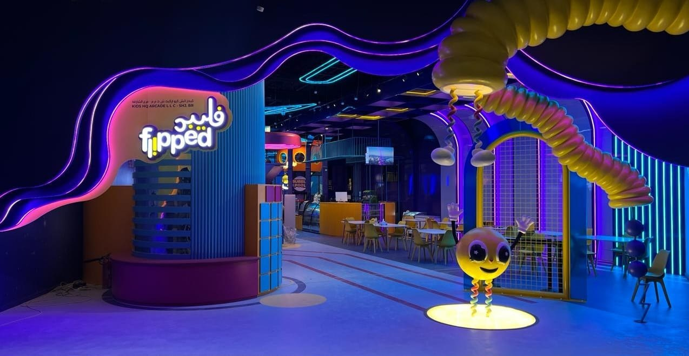
The Challenge
AA Joyland needed a full brand identity for a new trampoline park. That meant the logo, the mascot, signage, and how it would all come together in a physical space. Partway through the project, the original soft play area was cut for space and safety reasons. That meant replanning part of the identity system fast, without letting the quality drop.
The Solution
The goal was a brand that works everywhere, on a business card and across the whole venue. Every decision, from the logo to the wayfinding on the walls, built toward one feeling, fun and energy from the moment you walk in. The system leaned into a loose multiverse idea, where dimensions blur and energy is always moving. That idea shaped everything, from the mascot's backstory to the names on the signage.
At Flipped, the ordinary flips into the extraordinary. The trampoline landscape becomes a realm where the boundaries between dimensions blur. It's a space where the fabric of reality is in a constant state of joyful transformation.From the Flipped brand guidelines
Branding
Logo
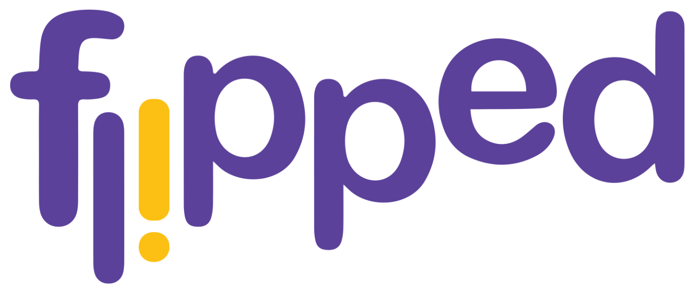
Logo Variations
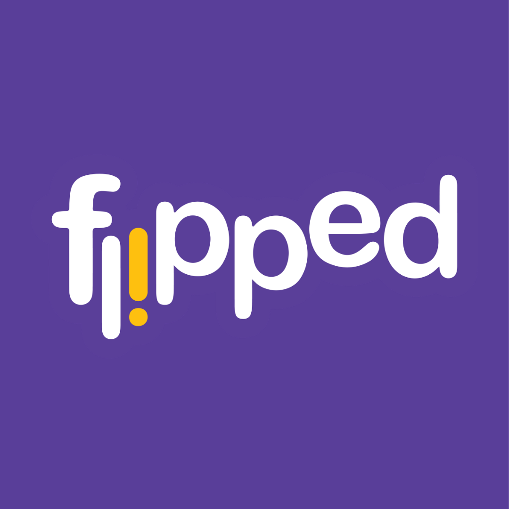
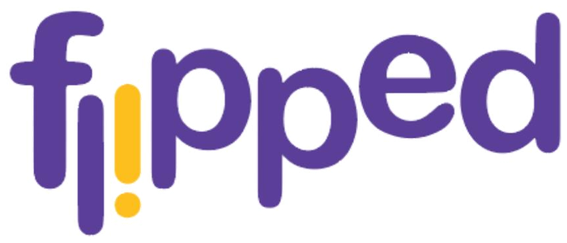
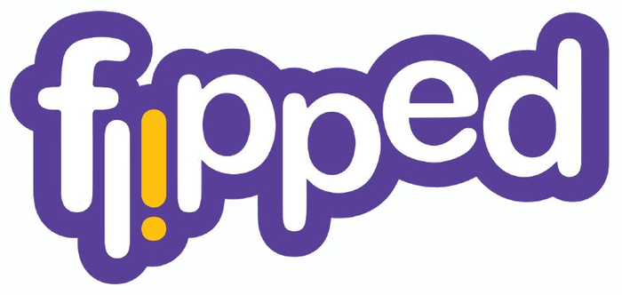
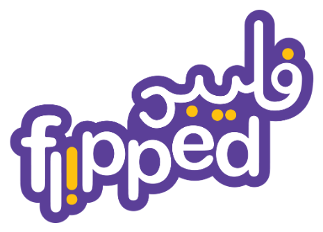
Color Palette
Primary Palette
Secondary Palette
Fonts
Meet Boing
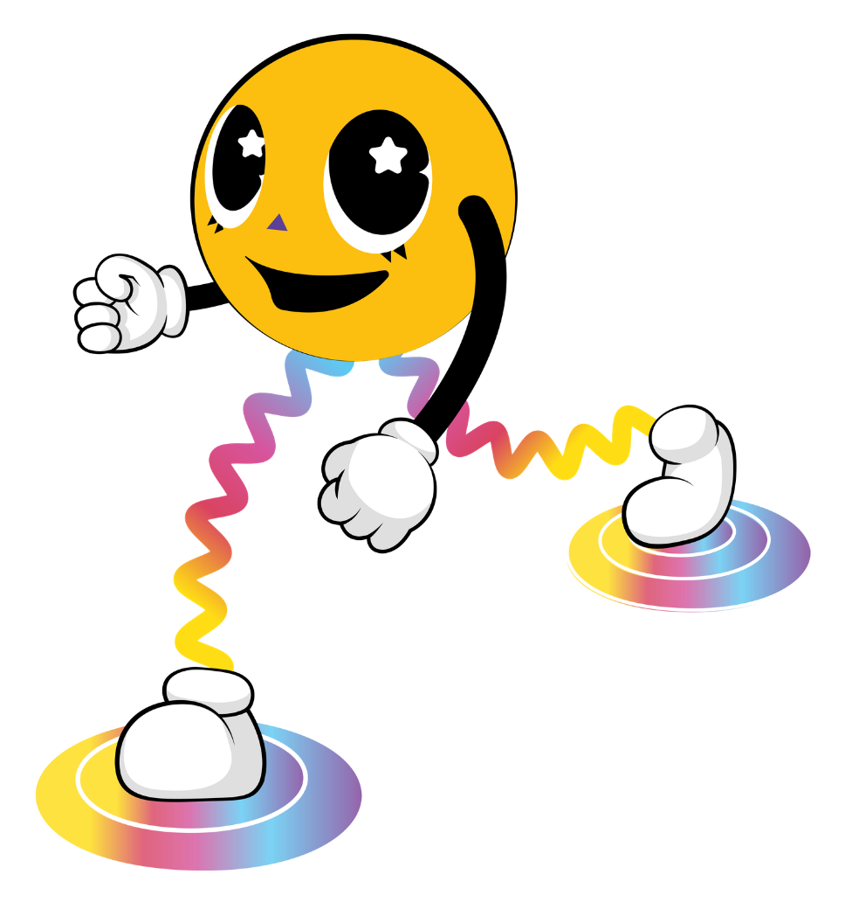
Meet Boing, the mascot built for Flipped. Boing is a bouncing ball of energy that zips through portals to explore different dimensions. Its legs are shaped like slinky springs, so it can bounce and switch between worlds with ease. Boing is playful and a little weird, and that's the point. It's the same energy the whole park was built around.
Character Sheet
A full expression and pose library kept Boing consistent everywhere it shows up, from wall graphics to signage to the entrance greeter.
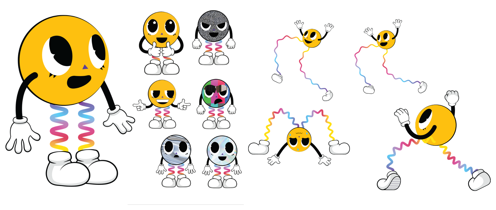
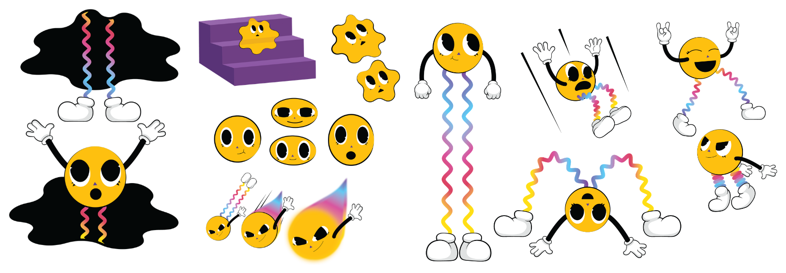
Process
Before a single wall graphic went up, the space was planned around five keywords. They kept every later decision, from floor plan to 3D render, pointed in the same direction.
Site Layout
The floor plan had to fit trampolines, a rope course, soft play, a toddler zone, and a cafe into one irregular footprint. Interactive soft play and wall climbing were tucked into the corners the main court couldn't use.
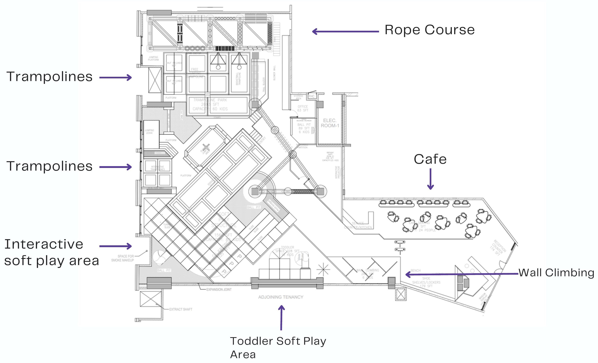
Concept Renders
Early 3D renders let the identity get tested before anything was built. They showed how the logo, the color system, and the mascot's world would read at full scale.
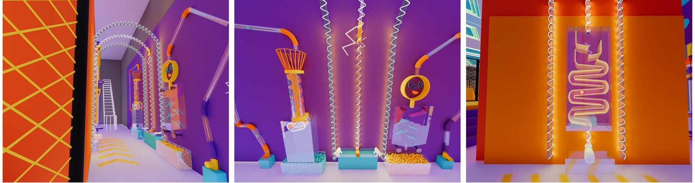
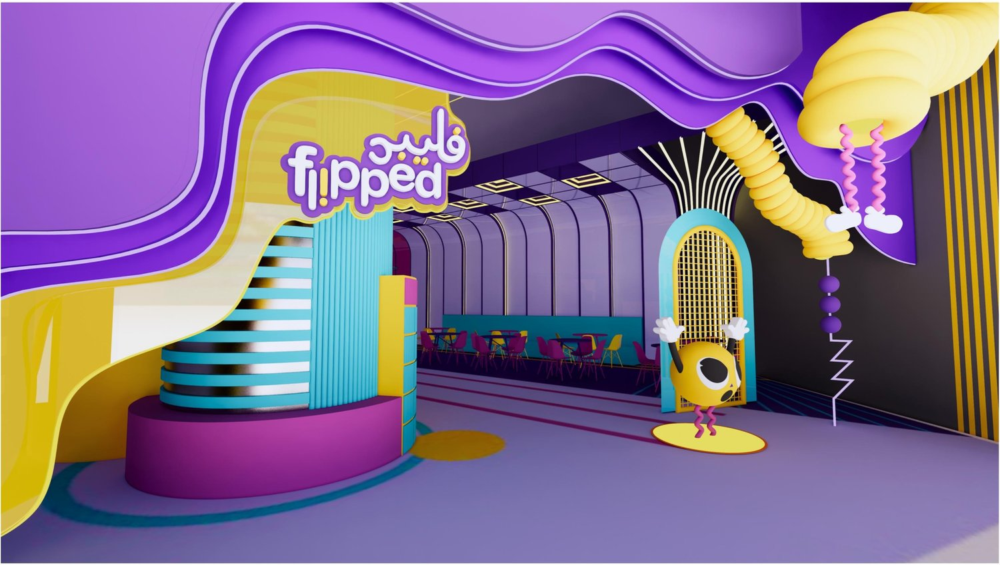
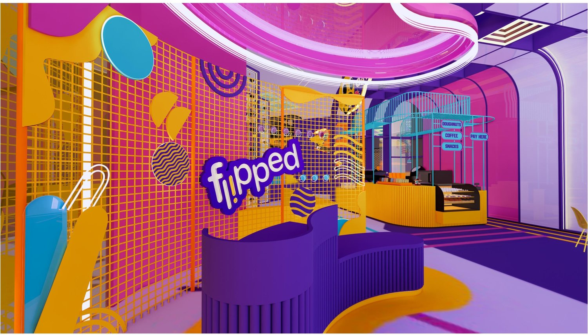
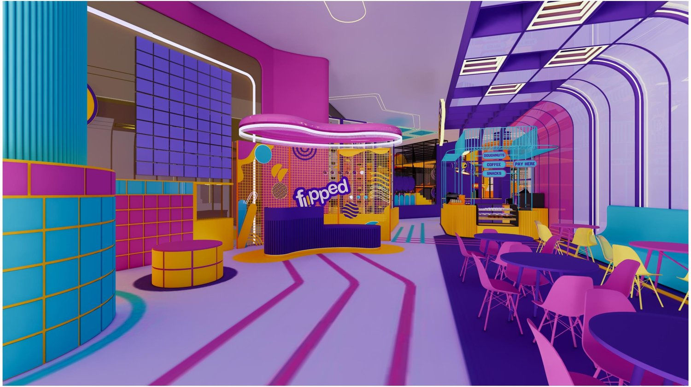
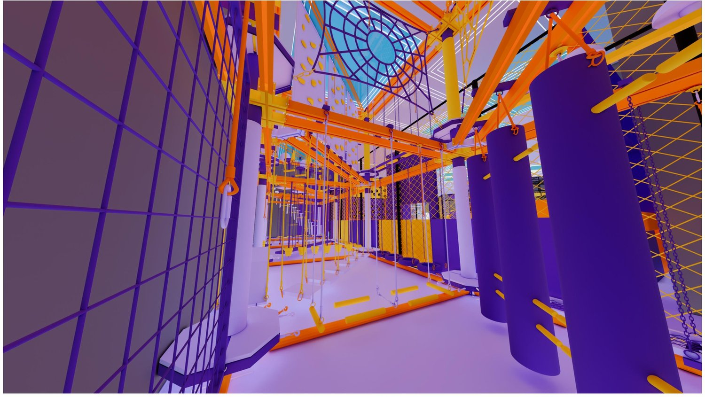
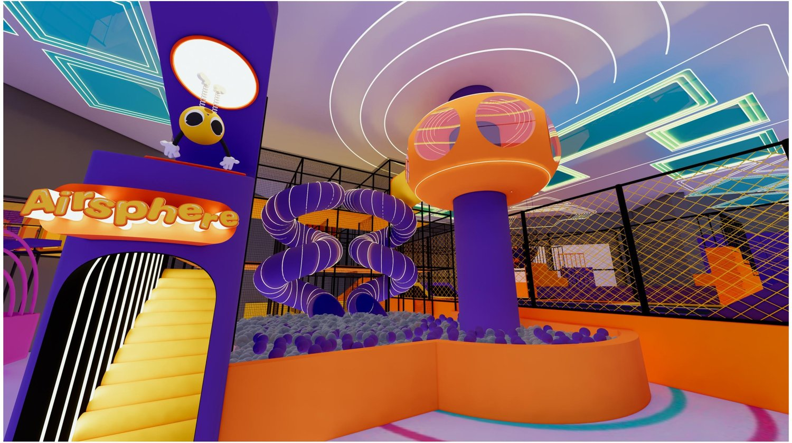
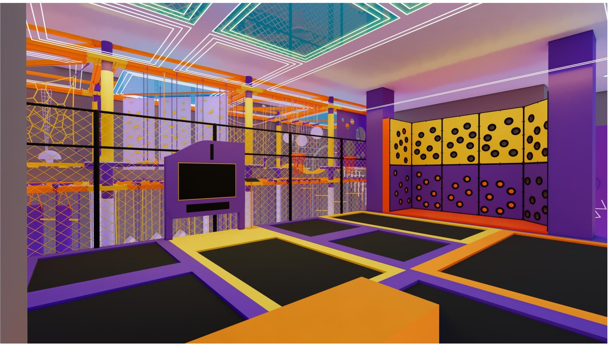
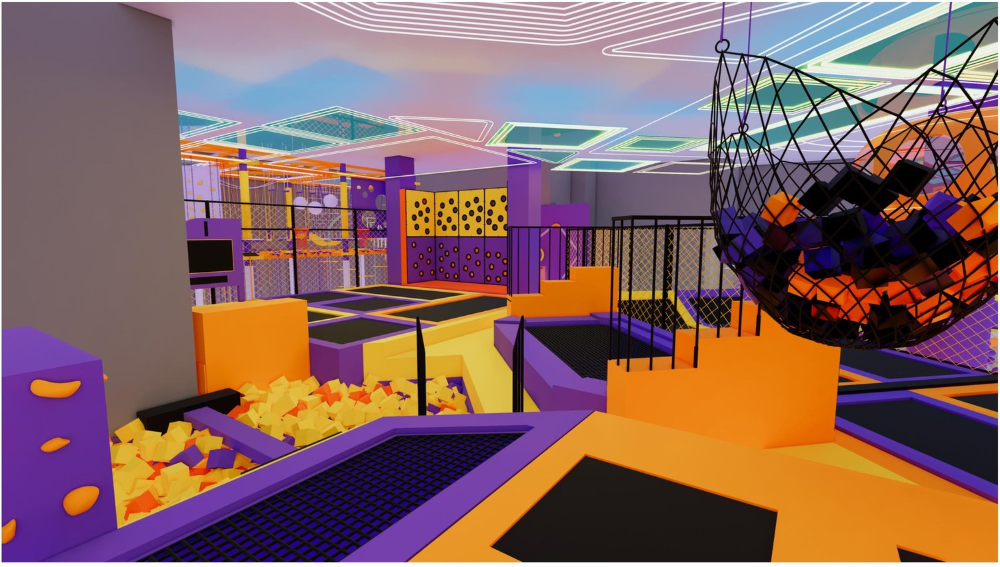
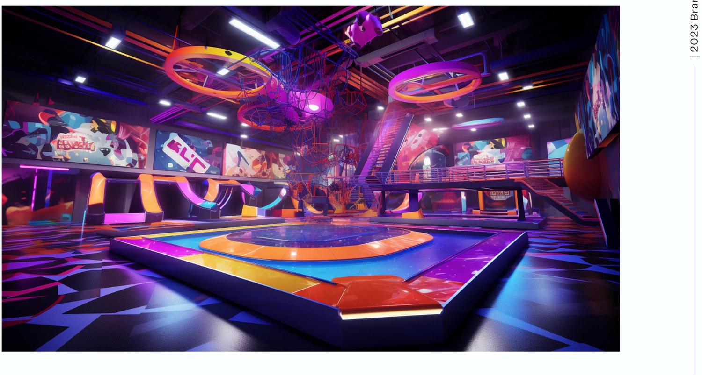
Internal Signage
Every zone inside Flipped got its own mini sub-brand, named and badged to match Boing's world. That includes Boing-Up, the trampoline area, plus Cosmo Café, Airsphere, Bubble Pool, Tiny Tumble, Ropescape, Jumpverse, and the Lil' Riders corner for the youngest guests.
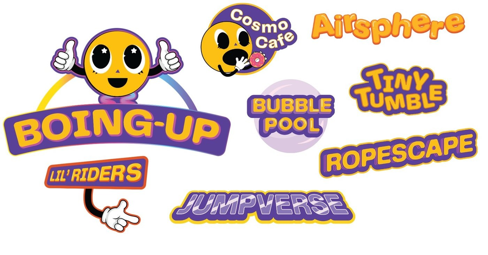
The Finished Space
One identity, carried consistently from the logo into the physical space itself. Built, lit, and open. Click any photo to browse the full set.
The Outcome
The finished brand gave Flipped a strong, playful identity in a crowded market. The logo, mascot, and signage system work everywhere, from the storefront sign to a cup sleeve. It balances the client's vision with new ideas, and leaves them with a full brand system to keep building on.
Reflection
- This was the first time I led an entire brand on a tight, high-pressure timeline.
- I'm proud of how hard my team worked to make it happen without losing quality.
- The project helped our company expand internationally with a brand built to be fun for kids.
- It also left the company with a system they can keep building on as they open new locations.